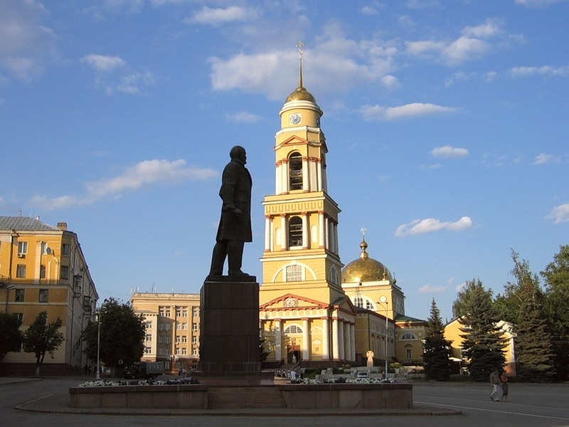

Лиипецк — город в России, административный центр Липецкой области.Является ядром крупнейшей российской агломерации со специализацией в сфере чёрной металлургии полного цикла, промышленный, агротехнологический и авиационный центр, курорт.
Липецк — второй по численности населения город в Черноземье, пятый в Центральном федеральном округе и тридцать шестой в России.
Важный автотранспортный узел агломерационного и регионального значения, расположенный между федеральными трассами «Дон» и «Каспий», обладает развитой сетью индустриальных железных дорог, крупнейший перегрузочный тупик.
Центр особой экономической зоны промышленно-производственного типа. Один из самых молодых региональных центров России.
Наш сайт готов поведать вам о важных исторических достопримечательностей, людей, связанных с ним.


Центральная площадь Липецка. Находится в Советском округе между улицами Интернациональной, Зегеля и Петровским проездом.
Была образована ещё до прихода советской власти как площадь перед Христорождественским собором.
В канун первой годовщины Октябрьской революции решением Липецкого исполкома Соборная площадь стала именоваться Интернациона́льной.
9 июля 1958 года Интернациональную площадь переименовали в честь Ленина.
30 июня 1993 года введено второе, дополнительное официальное название — Соборная площадь.
В решении Малого совета Липецкого горсовета народных депутатов сказано, что «установлено равноправие этих названий, любое из которых является равносильным.
На табличках и указателях обозначаются оба названия». Поэтому во многих документах появилась такая форма: площадь Ле́нина-Собо́рная, неверная с точки зрения орфографии.
